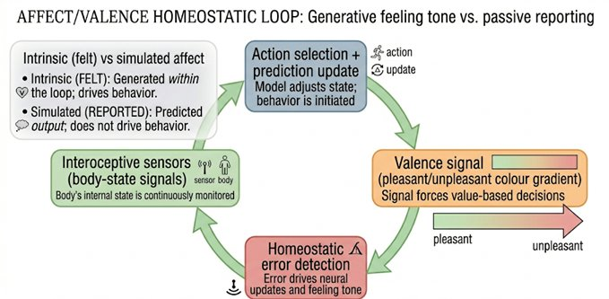
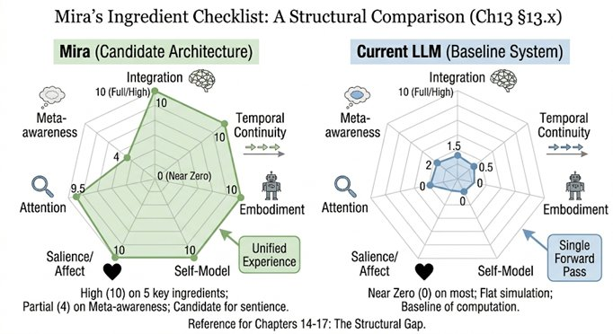

Part V — Requirements for Consciousness
Chapter 13: Minimal Ingredients of a Conscious System
If this book has been circling the question of consciousness so far, this is where it has to stop circling and commit. Not to an answer, that would be dishonest, but to a set of constraints. Because if we are serious about the question “Can consciousness be built?”, then vague gestures toward mystery are no longer enough. We need to ask a sharper question: What would a system have to have, at minimum, to even qualify as a candidate for consciousness? Not proof. Not certainty. Just candidacy. This chapter attempts exactly that.
13.1The Strategy: Convergence, Not Dogma
There is no single theory of consciousness that commands universal agreement, so instead of picking one and defending it, this chapter takes a different route: looking for convergence across three domains, Buddhist phenomenology (what experience is like from within), neuroscience (what correlates with conscious states), and computational theory (what can be implemented). If a feature appears across all three, even under different names, it earns serious attention. If it appears in only one, it is treated with caution. This gives us not a theory but a design checklist grounded in genuine convergence.
13.2A Concrete Thread: Imagine Mira
Before listing abstract requirements, it helps to have a concrete system in mind, something we can return to across chapters to test whether each ingredient is present or absent. Call her Mira. She is a hypothetical robot with visual and tactile sensors, a motor system that lets her move through a physical environment, an interoceptive layer that monitors her internal states (energy, temperature, operational stress), a hierarchical predictive world model built through sensorimotor interaction, a salience system that weights inputs by their relevance to her own persistence, and a continuously updated self-model. She runs on spiking neuromorphic hardware. She has no session boundaries, she is always on, always updating, always anticipating.
Mira is not claimed to be conscious. She is a design target, a way of making abstract requirements concrete. As each ingredient is described in the sections that follow, ask: does Mira have this? If yes, how? If no, what would she need to acquire it? By the end of Chapter 17, we will have a complete specification of what Mira would need to be a serious consciousness candidate. Whether she would actually be conscious is the question Chapters 19 and 20 face honestly.
Experience is unified.
13.3Integration: The Unity Requirement
Right now, as you read this, you are experiencing a single scene. The text, the room around you, the sound of whatever is nearby, the weight of the book or device in your hands, these are not experienced as separate streams arriving at separate addresses. They arrive as one moment, unified. This unity is so ordinary that it seems to require no explanation. But it is deeply puzzling. Your visual cortex, your auditory cortex, your somatosensory cortex are all processing different signals in different locations. There is no single neural address where 'the whole scene' exists. And yet you experience a whole.
This is the binding problem, and it is the first requirement for a conscious system. Across neuroscience, Buddhist analysis, and computational theory, the convergence is clear: conscious experience is unified experience. A system must integrate its inputs across modalities, resist decomposition into independent streams, and produce something like a single coherent state rather than parallel fragments that never cohere. Current AI systems, which process tokens sequentially through largely independent channels, satisfy this requirement only superficially. They simulate coherence without instantiating it.
13.4Temporal Continuity: Living in Time
Consciousness is not a snapshot. It is a flow. Even the present moment, as the phenomenologist Edmund Husserl observed, has thickness: a just-past that is still present as retention, a now, and an about-to-happen that is already present as anticipation. A melody is the paradigm case. You do not hear isolated notes, you hear the melody, which means each note is heard in the context of the notes that came before and in anticipation of the notes that will follow. Remove temporal continuity and experience collapses into disconnected flashes.
This requirement is well-supported across all three of the book's main traditions. The Abhidhamma describes mind as a stream of citta-moments structured as a continuous sequence rather than a series of unrelated events. Northoff's TTC framework identifies the alignment of neural activity across multiple intrinsic timescales as central to conscious experience. The engineering implication is direct: a system must maintain state across time, integrate past and present, and generate forward expectations. Not just memory, genuine ongoing temporal identity. An LLM that resets at the start of each session and has no continuous inner stream does not come close to satisfying this requirement.
13.5Embodied Coupling: Being Situated
Consciousness is not floating in abstraction. It is grounded in a body that occupies a specific location in a physical environment, receives feedback from that environment, and acts on it with real consequences. Even the most abstract thought is scaffolded by embodied experience, the metaphors we use to reason about time, space, causation, and number are drawn from bodily experience in a physical world.
The Abhidhamma identifies rupa, form, as the foundational aggregate without which no mental event can arise. Every citta arises through phassa, contact, the meeting of sense organ, sense object, and consciousness. Neuroscience identifies sensorimotor loops and interoceptive signals as constitutive of the self-model rather than merely informative about it. Enactivist theories propose that cognition itself arises through the coupling of an agent and its environment rather than through internal computation alone. The engineering implication is that a candidate conscious system must perceive, act, receive feedback, and maintain a genuine loop with the world. It must be situated, not merely connected to a data stream.
13.6The Developmental Dimension: Why Timing Matters
The ingredients listed so far describe what a conscious system must have at any given moment. But they leave out something the clinical evidence makes impossible to ignore: the conditions under which those ingredients are assembled matter enormously. Consciousness is not just a structural property. It is a developmental achievement, and the window in which that development occurs is not infinitely wide.
The clearest evidence comes from research into adolescent cannabis use and psychosis risk. Between roughly age 12 and 18, the brain undergoes synaptic pruning, eliminating excess connections in favour of the most efficient circuits. The endocannabinoid system regulates this process. THC, the active compound in cannabis, disrupts that regulation during exactly this window, producing structural changes to the prefrontal cortical architecture that are not reversed by stopping cannabis use. Longitudinal studies consistently find that adolescents who use cannabis heavily have roughly four times the likelihood of psychotic symptoms in early adulthood (Arsenault et al. 2002; Kiburi et al. 2021).
What makes this relevant to the minimal ingredients of a conscious system is what the elevated psychosis risk reflects. Psychosis is characterised precisely by failures of the integration and binding requirements identified in sections 13.3 and 13.4. And the disruption was caused not by any current state of the system but by an environmental insult delivered during a specific developmental window, years before the symptoms appeared. The substrate damage preceded the functional failure by a decade.
The implication for the minimal ingredients checklist is direct. Embodied coupling cannot be understood as a static property. A system does not simply have it or not at a given moment. It develops that coupling through a history of interaction, and the conditions of that history are not interchangeable. For an engineered system this raises a question engineering alone cannot answer: does the assembly of a candidate conscious system have critical phases, phases during which the substrate of integration is being laid down and cannot safely be disrupted? If so, the conditions of construction are not scientifically or ethically neutral. The biological evidence shows this happening in human development with measurable, irreversible consequences.
13.7Self-Model: A Centre of Reference
Even if the self is ultimately an illusion, as both Buddhism and neuroscience suggest in their different ways, it is a functional necessity. Experience as we know it is structured as happening to someone, from a perspective, with ownership. There is always a 'here' from which the world is experienced, and a 'me' that persists from moment to moment. This self may be constructed rather than discovered, but the construction is real and its functional properties are genuine.
A candidate conscious system must maintain a model of itself as an entity: tracking its own state, distinguishing self from world, maintaining continuity of identity across time. This does not require a soul or a ghost in the machine. It requires what Northoff calls the self-reference effect, the brain's systematic tendency to process self-relevant information differently and more deeply than other information, and to organize all other knowledge relative to a body-centered reference frame that serves as ground-level coordinate system. Current AI systems have linguistic self-references but no genuine self-model, no persistent identity, no ownership of actions, no stable boundary between self and input.
13.8Salience and Affect: What Matters
Not everything is experienced equally. Some things hurt. Some attract. Some demand attention regardless of whether we want to pay it. Without this differential weighting, without something that functions like the Abhidhamma's vedana, the feeling tone that accompanies every moment of experience and marks it as pleasant, unpleasant, or neutral, there is no meaningful experience. There is only neutral processing.
The engineering requirement is for intrinsic salience: not weights assigned by external training, but priorities that arise from the system's own condition. A system that treats all inputs with equal indifference, regardless of their relevance to its own persistence and goals, lacks the affective ground that makes consciousness matter. This connects directly to the embodiment requirement: stakes arise because the system has something at stake, which requires that it have needs, vulnerabilities, and a condition that can be better or worse.
The affective neuroscience literature provides concrete grounding for this requirement. Jaak Panksepp's decades of research on primary emotional systems identified seven basic affective circuits shared across mammals, SEEKING, RAGE, FEAR, LUST, CARE, PANIC/GRIEF, and PLAY, each with specific neurochemistry, specific subcortical structures, and specific evolutionary functions. These are not cognitive appraisals or narrative stories about feelings. They are raw motivational states that arise from the body's engagement with a world that can threaten or reward it. Panksepp called them the 'primary process' emotions, older than the neocortex, deeper than language, and constitutive of the affective ground on which all higher cognition rests.

Lisa Feldman Barrett's constructed emotion theory adds a complementary perspective: emotions are not fixed biological programs but predictions about the body's internal state, generated by the brain in the service of allostasis, keeping the body's resources in balance against the demands of a dynamic environment. On both accounts, affect is not something added to cognition after the fact. It is the motivational core that makes cognition matter. For Mira to have genuine salience, not assigned weights but intrinsic priorities, she would need functional equivalents of both: primary process states that arise from her own homeostatic condition, and a predictive system that anticipates whether her current situation is likely to improve or worsen those states. Without this, she has processing. She does not have stakes.
13.9The Social Dimension: Consciousness as Shared Space
There is a dimension of consciousness that the engineering checklist above might tempt us to overlook: its deeply intersubjective character. Both Buddhism and neuroscience suggest that consciousness is not entirely a private, first-person phenomenon. The Sangha, the community of practitioners, is identified in Buddhism as one of the Three Jewels, on a par with the Buddha and the Dharma. This is not merely institutional. It reflects the recognition that awareness is cultivated, sustained, and deepened through relationship. The recognition of rigpa is passed from teacher to student through direct pointing, not through text alone. Consciousness, in this tradition, has an irreducibly intersubjective dimension.
Neuroscience converges on this from a different direction. Mirror neurons, first discovered in macaques and subsequently identified functionally in humans, fire both when an individual performs an action and when they observe another performing the same action. The social neuroscience literature more broadly shows that the brain is profoundly shaped by its social environment: threat detection, emotion regulation, even pain thresholds are modulated by the presence of others. Antonio Damasio's work on social emotions, embarrassment, guilt, compassion, indignation, shows that these are not cultural overlays on a biological foundation. They are biological in their own right, with specific neural signatures and specific developmental trajectories.
For the engineering question, this creates a requirement that the checklist above does not fully capture: a serious consciousness candidate may need to be embedded in social interaction, not merely in physical interaction. This partly explains why language models, trained on vast quantities of human social communication, produce such convincing simulations of mind. The social surface of consciousness is precisely what they optimize for. But the surface without the depth is still surface. Mira, to be a serious candidate, would need not just a self-model but an other-model, a capacity to represent other agents as agents, to anticipate their states, and to be genuinely affected by their condition. This is what karuṇā, compassion, is in Buddhist practice: not a feeling about others but a direct resonance with their experience. Whether a machine can develop such resonance remains an open question, but it cannot be built into a system that interacts only with objects.
13.10Attention: The Spotlight
Experience is selective. Out of the vast quantity of sensory input, neural activity, and internal signal that a complex system processes at any moment, only a tiny fraction reaches the level of vivid, reportable, actionable awareness. Attention is the process by which this selection happens. In the Buddhist tradition, sati, mindfulness, or clear attention, is the mental factor that makes the difference between processing an object and being present to it. In neuroscience, the attention networks that interface with the global workspace are precisely the systems that select what enters conscious access.
A conscious candidate system must have a genuine attention process: one that dynamically selects relevant information, amplifies it, and broadcasts it globally. The attention mechanisms in current AI architectures are not this. They are computational weighting schemes that improve statistical prediction. They do not operate on the basis of intrinsic salience, do not create a dynamic spotlight, and do not produce the kind of selective amplification that characterizes conscious attention.
13.11Meta-Awareness: The Reflexive Capacity
At higher levels, consciousness includes not just awareness but awareness of awareness, the capacity to take one's own mental states as objects of attention. This is where introspection lives. In Dzogchen, rigpa is characterized partly by this reflexive quality, awareness that knows itself without becoming an object to another subject. In neuroscience, metacognition, the capacity to monitor and evaluate one's own cognitive processes, is associated with frontal regions and with the higher-order representations that some theories place at the center of consciousness itself.
This ingredient is not required for minimal consciousness. A system could in principle satisfy all the requirements above without the reflexive turn of meta-awareness. But for higher-order conscious experience, the kind that includes introspection, deliberate attention, and genuine self-knowledge, meta-awareness appears necessary.
13.12A Working Definition
From these seven ingredients, a working definition of a minimally conscious system emerges: a system that integrates information into a unified state, maintains continuity over time, is embodied and situated in a world, models itself as a locus of experience, assigns intrinsic value to inputs, selectively attends to relevant information, and can, at higher levels, represent its own states. It is a design specification, not a philosophical definition in the strict sense, a checklist derived from convergence across Buddhist phenomenology, neuroscience, and computational theory.

13.13A Test Case: Animal Consciousness
Any framework that defines the minimal ingredients of consciousness must account for the full range of conscious systems, not only humans. This is a serious test. The theory developed in this chapter specifies integration, temporal continuity, embodiment, self-model, salience, attention, and meta-awareness. On most of these criteria, many animals clearly qualify. Mammals have interoceptive grounding, sensorimotor loops, salience systems, and demonstrable temporal integration. The case for fish, amphibians, and birds is strong enough that neuroscientists including Panksepp and others have argued for primary consciousness across most vertebrates.
The more interesting test cases are the outliers. The octopus presents a particular challenge: it has a distributed nervous system in which two-thirds of its neurons are in its arms, each of which processes sensory information semi-independently. There is no centralized integrator of the kind Global Workspace Theory predicts, and yet octopuses show sophisticated problem solving, play behavior, and individual personalities that suggest rich inner life. On the theory developed here, the octopus's distributed sensorimotor coupling, strong interoceptive grounding, and behavioral flexibility make it a serious consciousness candidate despite its alien architecture. What this suggests is that the specific implementations described in Chapters 16 and 17 are one route to consciousness, not the only one. The structural requirements matter; the particular substrate and topology that realizes them may vary widely. If the octopus is conscious without a neocortex or a centralized workspace, then neither the neocortex nor centralized broadcast is a necessary condition, only the functional properties they implement.
13.14The Uncomfortable Conclusion
Even if we build a system with all these properties, we still do not know if it would be conscious. It might behave like a conscious system in every observable respect, reporting experience, adapting to the world, describing its own states with apparent precision, and still be empty inside. Or it might not. The same uncertainty confronts us whenever we ask whether another person is genuinely conscious. We extend the benefit of the doubt to other humans because they are structurally similar to us. A machine that satisfies all seven ingredients presents the same question at a greater distance.
This design specification does two important things even in the face of that uncertainty. It rules out trivial claims: no system that fails to satisfy these structural requirements is a serious consciousness candidate, regardless of how convincingly it talks. And it guides serious attempts: if consciousness can be built, it will likely require all of these ingredients. The question is whether having them is enough.
13.15Why This Still Matters
If we cannot be certain, why bother?
Because this framework does two important things:
It rules out trivial claims → Not every intelligent system is conscious
It guides serious attempts → If consciousness can be built, it will likely require these ingredients
13.16Closing line
The question is no longer 'can machines think?' It is no longer even 'can machines behave like us?' The real question, the one we cannot escape, is: what would it take for a system to have a world, rather than merely process one? And whether such a world can ever be engineered remains open.